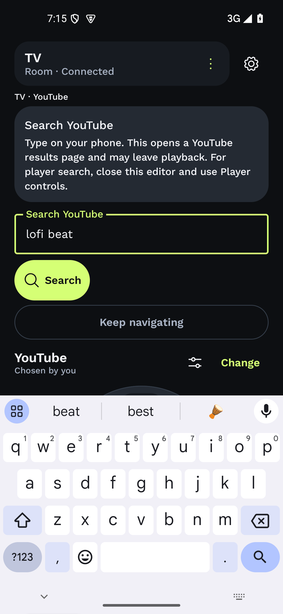
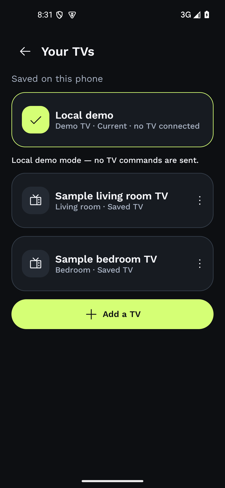
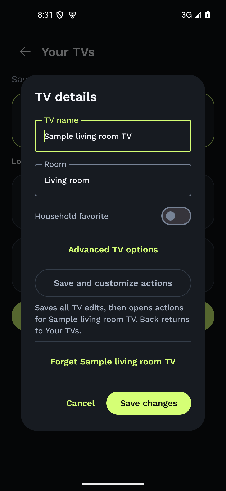
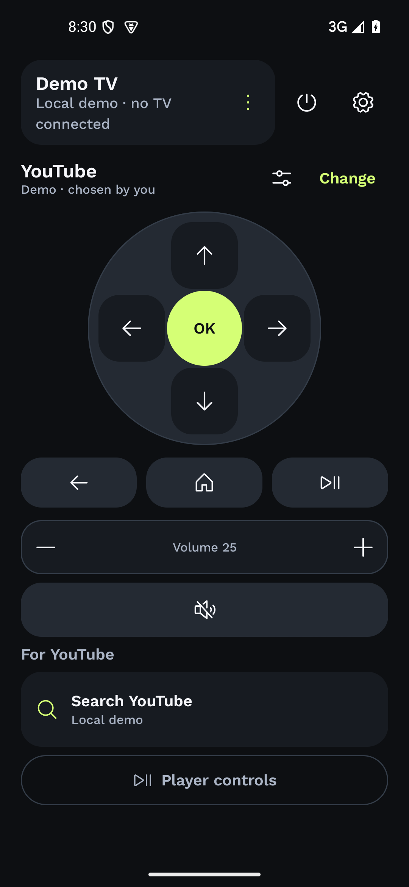

The phone remote for Android TV + Google TV
Skip the TV keyboard on YouTube.
Search YouTube on your phone.
Watch it on your TV.
A full keyboard for YouTube searches. A quick way to share a link. Your TVs, organized by room.
Free · No ads · No account
Search support depends on your TV and its YouTube version.

03 / Give it a destination
The right TV.
The right room.
Give each saved TV a name and room. Pick the living-room screen without guessing which one is which.
Living room selected in this preview.
Illustration. No TV is connected.

And the everyday controls
All within
thumb’s reach.
Navigation, volume, and available app actions. Choose an app to see its controls.
App previews. Available controls vary by TV.
Make the names your own
Edit a TV’s name and room in its details.


Will it work?
Pick your TV.
Pair locally.
The Remote works with Android TV and Google TV devices that support Android TV Remote Service v2. Your phone needs Android 8.0 or later. There's no iPhone version.
Your phone and TV pair over your home Wi-Fi. D-pad controls are the default; available controls vary by TV model and firmware. YouTube search and links depend on the TV's YouTube version.
- Optional Bluetooth mouse: needs an Android 9.0 or later phone with Bluetooth HID support, plus a TV that supports the connection.
Remote commands go to your paired TV over the local network, without a developer cloud relay. The Remote doesn't keep a search history.
Get The Remote
Download.
Pair. Watch.
The Remote is free for Android phones and works with compatible Android TV and Google TV. No ads, no account, no signup.
01 Download the app on your Android phone.
02 If Android asks, allow installs from your browser.
03 Open the file and tap Install.
04 Pick your TV and enter the code it shows.
What you need
Phone: Android 8.0 or later. There's no iPhone version.
TV: Android TV or Google TV with Android TV Remote Service v2, on the same home Wi-Fi as your phone.
Controls vary by TV and firmware. Check your TV and optional extras.
Android phone APK
The Remote for Android.
Version 0.1.0-beta.8 · build 8
Requires Android 8.0 or later on your phone.
Free · No ads · No account
APK size: 4.7 MB
Android may ask you to allow installs from your browser or file manager. You can turn that off again after installing.
Installing or updating
Open the downloaded file and tap Install. To update, download the latest version from this page and open it. Android installs it over your current app when the app version and signing identity are compatible.
If Android rejects an update, keep the app you have and check that the file came from this page. Uninstalling removes locally saved TVs, pairings, and settings.
Check the APK checksum
Compare the downloaded file's SHA-256 with this release checksum.
8ea325cd117fb2dcaafd9164b1f23f67633d4cca1993aa2a394b53e3a5d2d0d1A matching checksum confirms these file bytes; it does not replace Android's installation and signature checks.
When the TV needs a hand
Less guesswork.
More watching.
Android TV remote app can't find your TV? Start here
Find the failure stage before pairing everything again.
02 / 4 min readHow to type on Android TV with your phone
Get the right letters into the right search field.
03 / 4 min readLost your Android TV remote? What works before buying another
Recover control based on your TV’s network and setup state.
Questions, answered
Before the
first click.
Is The Remote free?
Yes. No ads, no in-app purchases, no subscription, and no account.
Is it on Google Play?
No. You download The Remote directly from this site. Tap Download APK on your Android phone, open the file, and install it.
Is installing the APK safe?
Download it only from this page. Android checks the app's signature before installing it, and you can compare the file's SHA-256 checksum in the download section. If Android asks you to allow installs from your browser, you can turn that off again afterwards.
Does it work on iPhone?
No. The Remote is for Android phones running Android 8.0 or later. There's no iPhone version.
Which TVs does it work with?
Android TV and Google TV devices with Android TV Remote Service v2. Available controls vary by model and firmware.
Do I need the YouTube app on my phone?
No. YouTube search and YouTube links go straight to the TV you pick, without YouTube on your phone. The TV's YouTube app and its version decide whether a search or link opens.
The app can't find my TV. What should I check?
Turn the TV on and put your phone on the same home Wi-Fi as the TV, not mobile data. Guest, hotel, and school networks, and routers with AP or client isolation turned on, can stop devices from reaching each other. Then search again.
The pairing code timed out. Now what?
Pairing codes only last a short time. Ask the TV for a new code and enter the one on the screen now, not one from an earlier try. If no code appears, check that you picked the TV in front of you.
My TV stopped showing up after an update.
Let the update finish, turn the TV on, and check it's still on the same Wi-Fi as your phone. Then open The Remote. If it asks you to pair again, enter the new code shown on the TV.
A YouTube search or link won't open on the TV.
Open YouTube on the TV, make sure it's up to date, and try again. Search and link support depend on the TV and its YouTube version. If the TV shows a sign-in or playback message, sort that out on the TV first.
I have more than one TV. How do I pick the right one?
Give each saved TV a name and a room, like Living room or Bedroom. Choose the TV before you send a YouTube search or link, so it opens on the screen you meant.
How do I update the app?
Download the latest version from this page and open it. Android installs it over your current app when the app version and signing identity are compatible. If Android rejects it, keep the app you have. Uninstalling removes saved TVs, pairings, and settings.
Where does my YouTube search go?
To the TV you picked, over your local network. YouTube may process the search link under its own privacy policy. The Remote doesn't keep a search history.
Does the Bluetooth mouse work on every phone?
No. D-pad controls are the default over your home network. The optional Bluetooth mouse needs Android 9.0 or later, Bluetooth HID support on your phone, and a TV that supports the connection.